TOTVS RM
O TOTVS RM é um sistema de gestão empresarial (ERP) desenvolvido pela TOTVS, amplamente utilizado para integrar e gerenciar processos de diferentes áreas da empresa, como Recursos Humanos, Financeiro, Contabilidade, Fiscal, Compras, Estoque e Patrimônio. A plataforma permite automatizar rotinas, centralizar informações e apoiar a tomada de decisão por meio de parametrizações, relatórios e controles operacionais. Abaixo alguma das ferramentas do sistema utilizada no dia a dia:
RM Reports
O RM Reports é a ferramenta de criação e personalização de relatórios do TOTVS RM. Ela permite desenvolver relatórios sob medida, utilizando dados do sistema para atender às necessidades específicas dos usuários, facilitando análises, controles operacionais e a geração de documentos gerenciais.
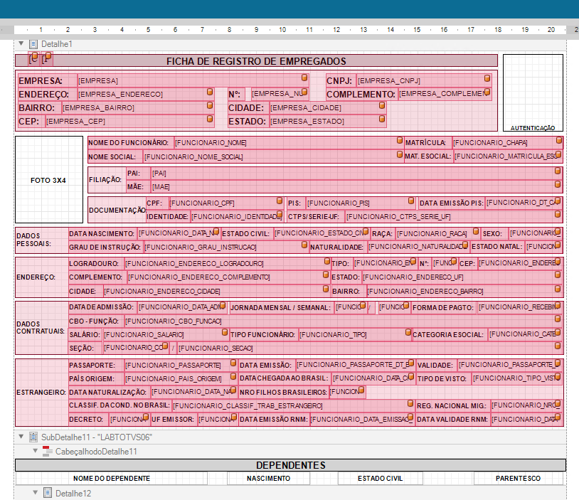
Planilha NET
A Planilha.Net é uma ferramenta do TOTVS RM que permite criar relatórios e consultas em formato de planilha eletrônica, integrando dados diretamente do sistema. Ela possibilita a elaboração de relatórios personalizados, automatização de informações e geração de documentos conforme as necessidades dos usuários e dos processos da empresa.
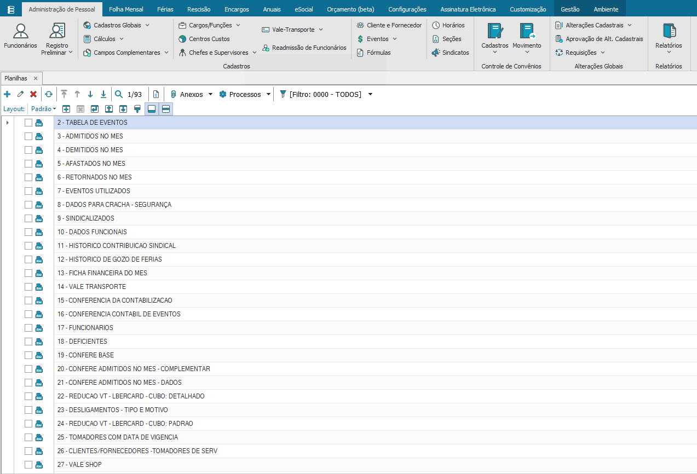
Gerador de Saída
O Gerador de Saída é uma ferramenta do TOTVS RM utilizada para criar e personalizar documentos e arquivos de saída a partir das informações do sistema. Com ela, é possível gerar arquivos em diferentes formatos, automatizar layouts e atender às exigências de processos internos, integrações e obrigações legais.
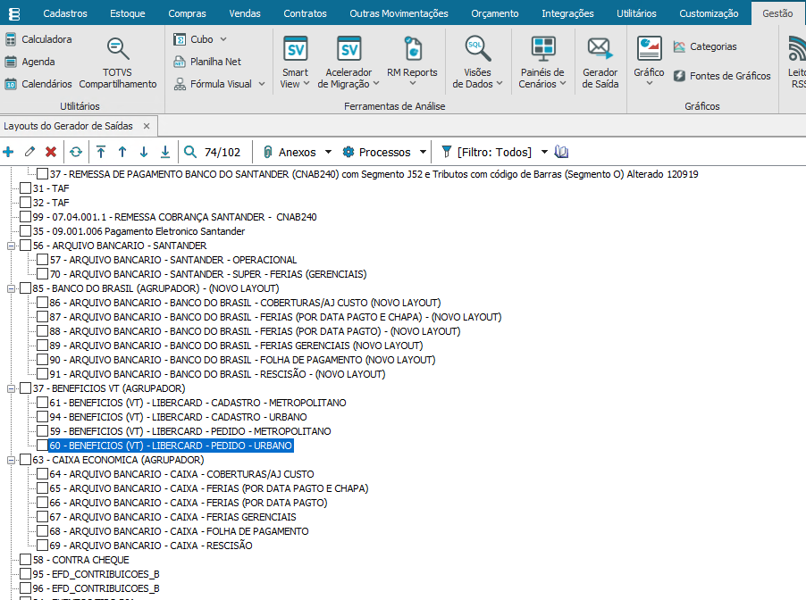
Cubo
O Cubo do TOTVS RM é uma ferramenta de análise multidimensional que permite explorar e consolidar informações do sistema de forma dinâmica. Com ele, é possível criar visões analíticas, realizar filtros, agrupamentos e comparações de dados, facilitando a geração de indicadores e o apoio à tomada de decisão gerencial.
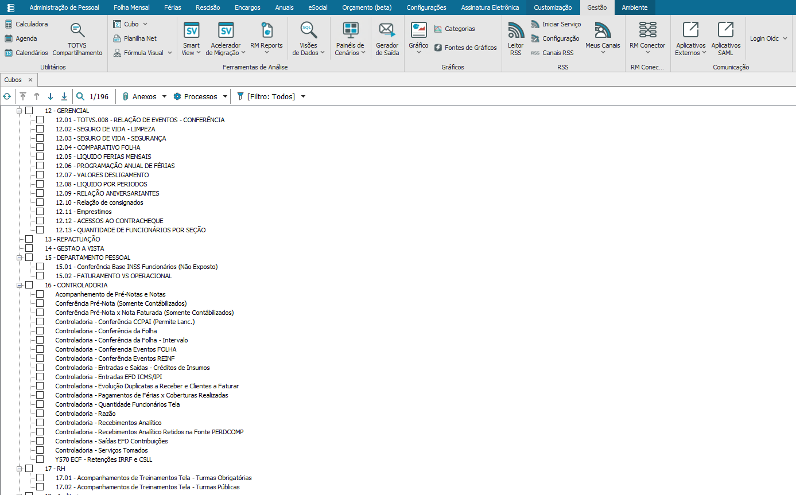
Fórmula Visual
A Fórmula Visual do TOTVS RM é uma ferramenta utilizada para criar regras de negócio, cálculos e validações dentro do sistema, por meio de uma interface visual e lógica. Ela permite automatizar processos, personalizar comportamentos do sistema e atender às necessidades específicas da empresa, reduzindo tarefas manuais e aumentando a eficiência operacional.
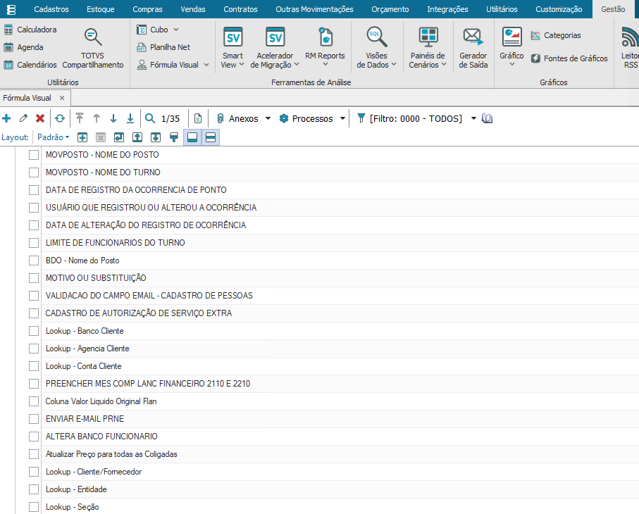
Fórmula
As Fórmulas do TOTVS RM são recursos utilizados para automatizar cálculos, validações e regras de negócio dentro do sistema. Elas permitem personalizar processos, criar condições específicas, realizar integrações entre informações e adaptar o comportamento do RM às necessidades da empresa, proporcionando maior eficiência, padronização e confiabilidade nas rotinas operacionais.
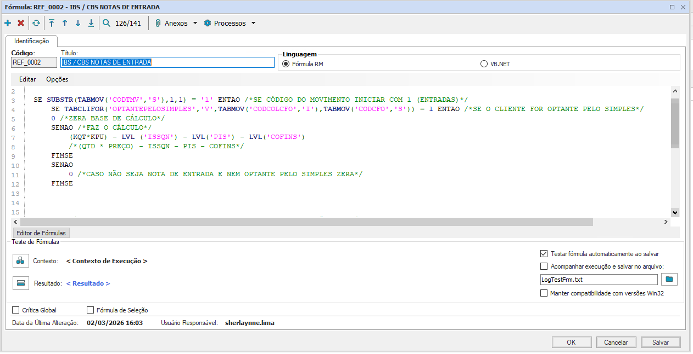
Visões de Dados
A Visão de Dados do TOTVS RM é uma ferramenta utilizada para consultar, organizar e apresentar informações do sistema de forma estruturada. Ela permite criar consultas personalizadas, aplicar filtros, relacionar tabelas e disponibilizar dados para relatórios, integrações e análises, facilitando o acesso às informações e apoiando a tomada de decisão.
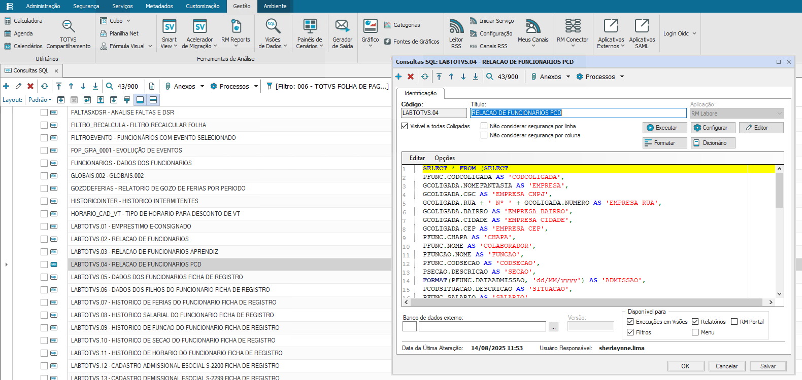
Parametrização
A Parametrização no TOTVS RM consiste na configuração e personalização do sistema para atender às regras de negócio e aos processos da empresa. Envolve ajustes em cadastros, fórmulas, eventos, permissões e rotinas operacionais, garantindo que o sistema funcione de forma integrada, eficiente e alinhada às necessidades dos usuários.
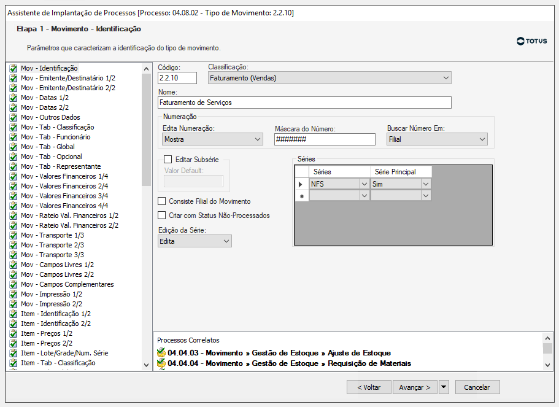
Reforma Tributária
Minha atuação:Participei da adequação do TOTVS RM às exigências da Reforma Tributária, realizando parametrizações fiscais, revisão de cadastros, validação de regras tributárias e testes dos processos integrados. O trabalho envolveu análise de impactos, homologação e suporte às áreas envolvidas durante a implantação.
Módulos Impactados:Estoque, Compras,Faturamento, Contábil,Fiscal, e Financeiro.
Tecnologias utilizadas:SQL, Fórmulas, Parametrização e TOTVS RM.
Parametrizações Realizada:Classificação Fiscal de Bens e Serviços
Realizei a parametrização da Classificação Fiscal de Bens e Serviços (CFBS) no TOTVS RM, efetuando o cadastro e a vinculação das classificações fiscais aos produtos e serviços da empresa. Essa configuração foi essencial para adequar o sistema às exigências da Reforma Tributária, garantindo a correta identificação fiscal das operações, maior conformidade com a legislação e suporte aos processos de emissão de documentos fiscais e apuração tributária.
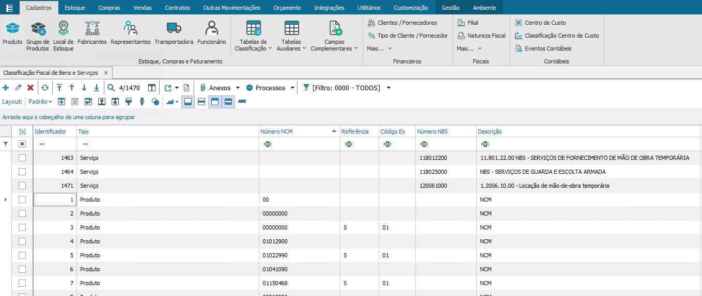
Regra Tributária
Configuração e validação de Regras Tributárias no sistema para automatizar o cálculo de impostos. O trabalho garantiu que as operações de entrada e saída recebessem a tributação exata conforme o perfil do cliente e produto, otimizando o faturamento e evitando inconsistências no ERP.
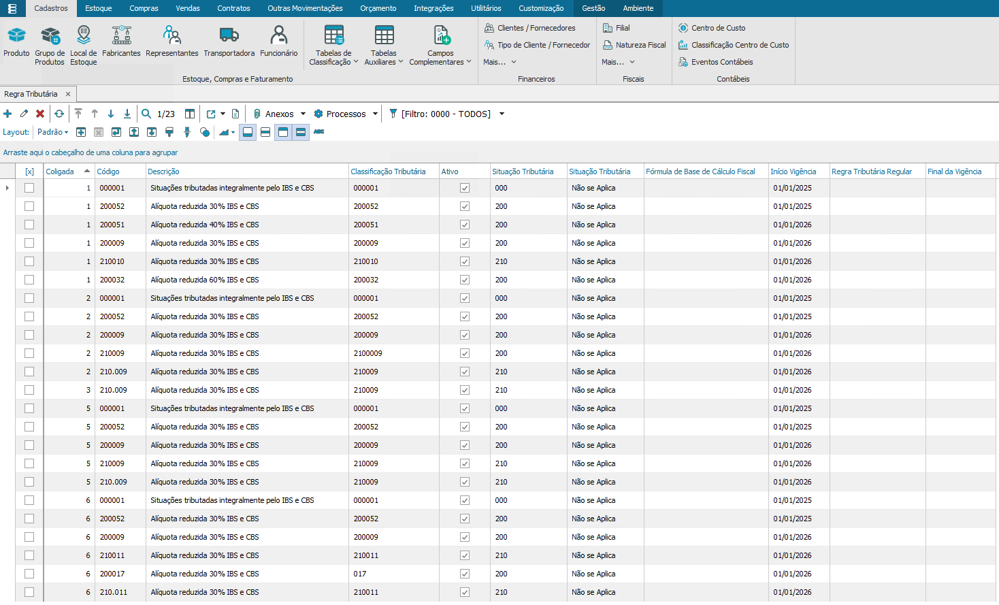
Tabela CST
Mapeamento e parametrização das Tabelas de Código de Situação Tributária (CST). Essa etapa foi fundamental para refletir com exatidão o tratamento tributário das mercadorias, garantindo o correto preenchimento do SPED e a emissão de notas fiscais em total conformidade legal.
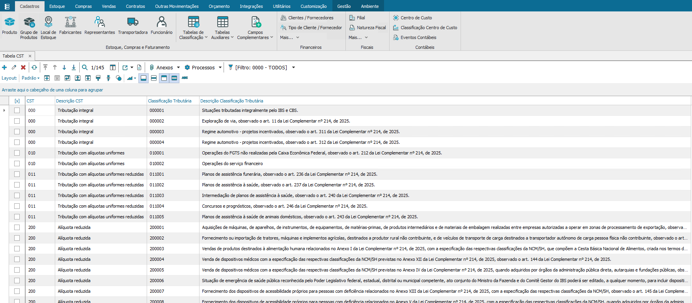
Vigências de Alíquota
Implementação e controle das Vigências de Alíquota no TOTVS RM. Esse processo assegurou que o sistema aplicasse automaticamente os percentuais exatos de impostos de acordo com o período de validade de cada legislação, evitando falhas de cálculo na transição de regras.
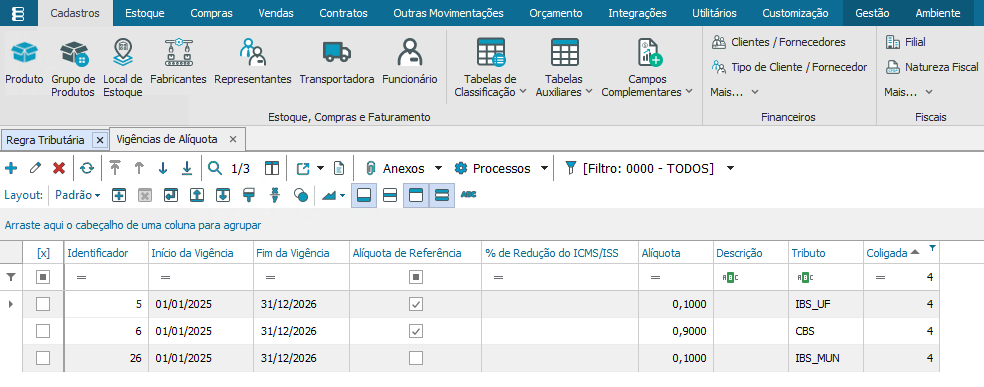